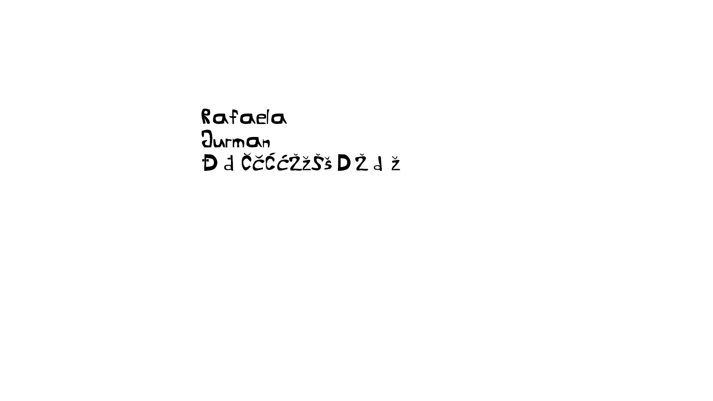
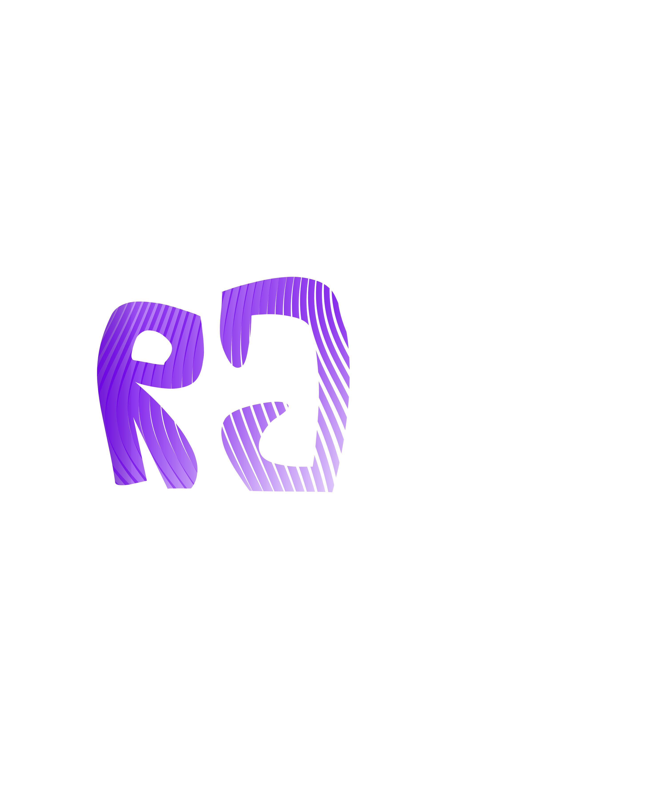
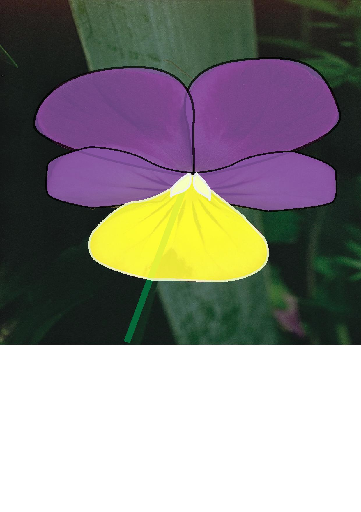
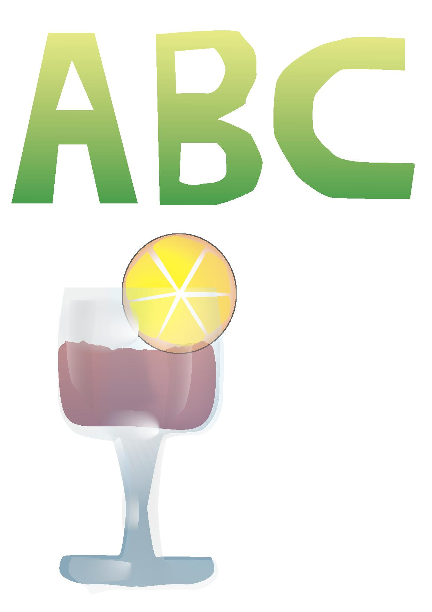
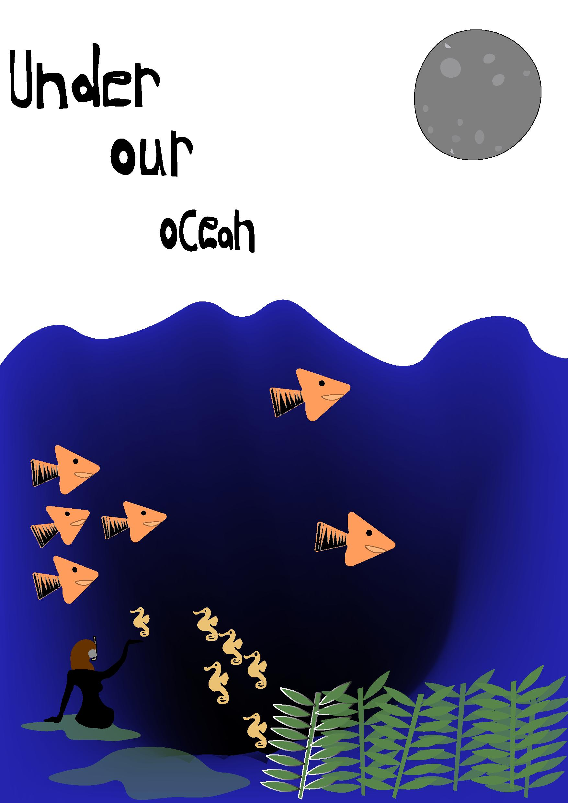
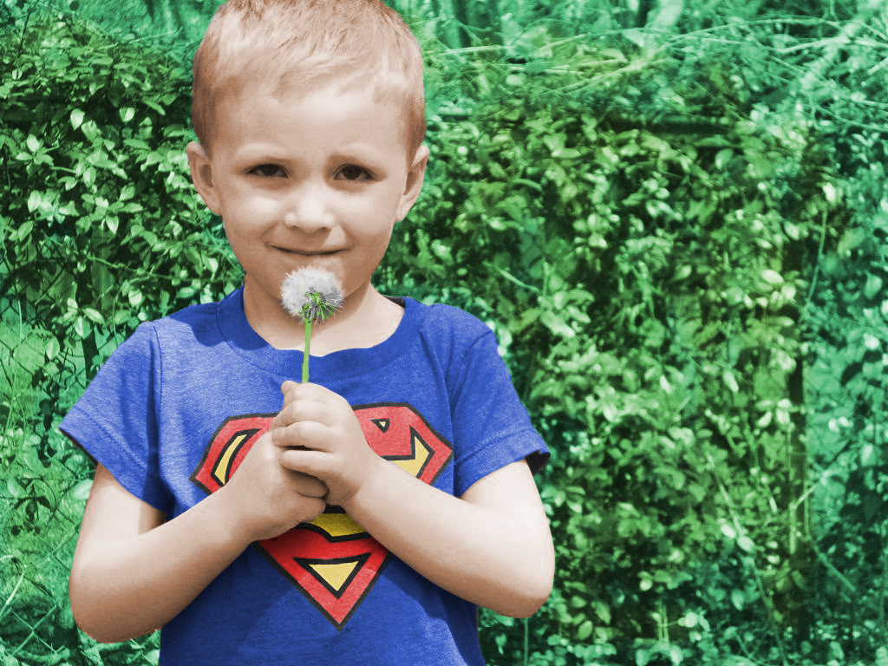
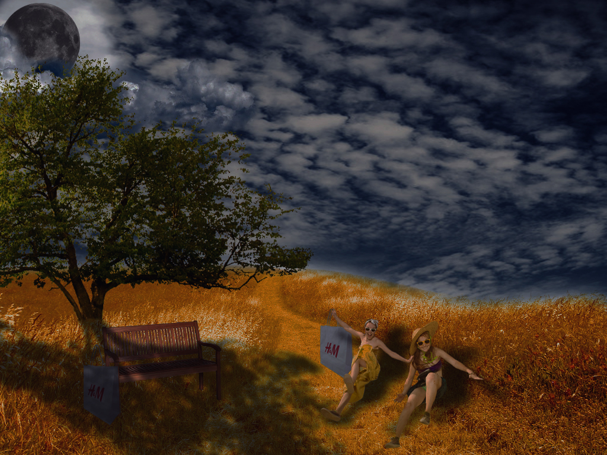
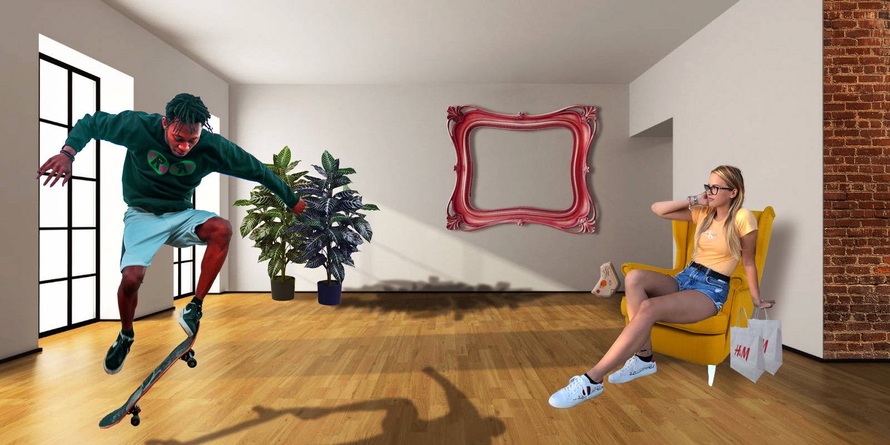

- U prvoj vježbi smo napravili svoj font, moj je napravljen u FontForge-u
- U drugoj vježbi smo pomoču Beizierovih krivulja u koordinantnom sustavu i našeg fonta preko krivulja ispisali naše inicijale.
- U trećoj vježbi smo crtali konture slike na cvijetu koristeći pen alat i tehnike kopiranja.
- U četvrtoj vježbi smo kreirali složeni objekt u kojem smo koristili tehnike spajanja i izrezivanja objekata i primijenili različite vrste gradijenata.
- Peta i posljednja vježba iz vektorske grafike tj. 1. projektni zadatak je bio ilustrirati pomoću alata za crtanje Bezierovih krivulja na odabranu temu iz flore i/ili faune podmorja.
- U petoj vježbi smo koregirali slike i upoznavali se sa tehnikom retuširanja.
- U vježbi prolazimo kroz tehnike koloriranja slike koje se može primijeniti na slike kojima želimo promijeniti nijansu određenih područja.
-U ovoj smo vježbi radili kombiniranje više fotografija izrezivanjem dijelova različitih slika i spajanjem u jednu cjelinu.
U 2. projektnom zadatku smo trebali kreirati sliku kroisteći se Photoshopom ili Gimpom kao kompoziciju više fotografija koristeći tehnike retuširanja, fotomontaže i koloriranja.

- U ovoj vježbi smo naučili kako napraviti video isječak čija se sekvenca ponavlja u beskonačnost, u GIF formatu.
- 9. i ujedno i zadnja vježba iz Digitalnog multimedija gdje smo rezali i spajali video isječake iz više izvora, koristili video efekti, brisali i dodavali zvuk, dodavali i obradađivali tekst.